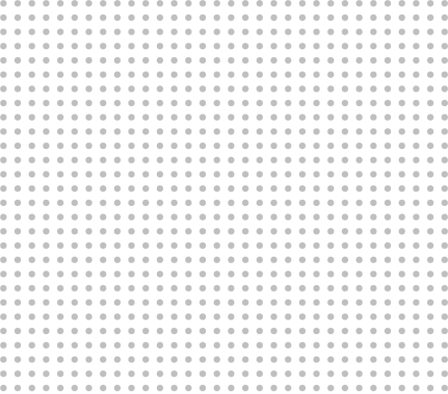

The great horned owl
also known as the tiger owl or the hoot owl, is a large owl native to the Americas.
/01
GREAT HORNED OWL

The burrowing owl
is a small, long-legged owl found throughout open landscapes of North and South America.
/02
BURROWING OWL